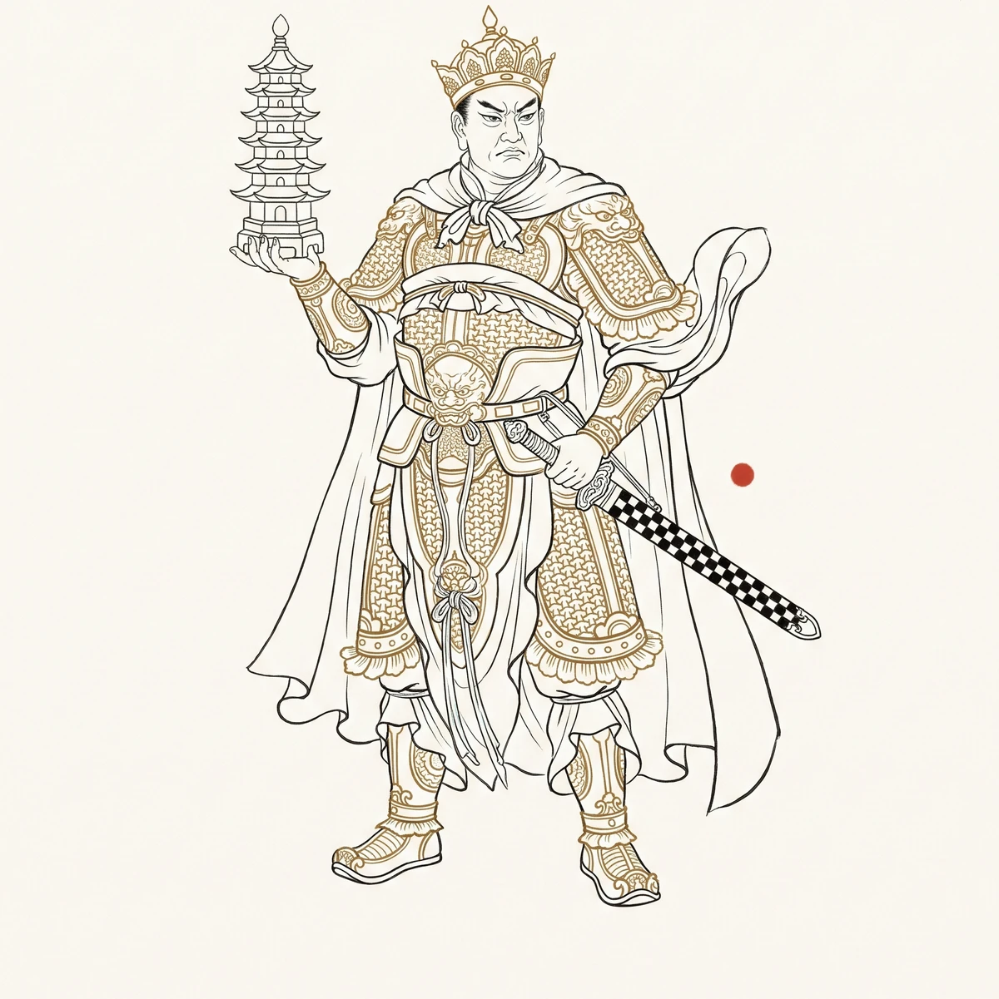

托塔李天王：塔

轨标：个人创作 来源：人物三.txt 章节 "托塔李天王：塔" 双索引链接： - 正向：CHANGELOG.md W285 段（待补） - 反向：file-index.md 本文件条目（待补） 核验状态：未核验
一、那座塔
天庭，云楼宫。托塔李天王李靖的手上，永远托着一座塔。上朝托着，退朝托着，巡营托着，吃饭托着，睡觉也托着。
那座塔叫玲珑剔透舍利子如意黄金宝塔。名字很长，材质很贵重。但说到底是座塔，一座可以放在掌心的塔。不是法器，不是法宝，是佛门赠礼——如来送给他的。送给他的理由，原著没有写得太清楚，但读者都知道。这座塔不是用来降妖除魔的，是用来防他儿子的。
哪吒。那个被他逼得剔骨还父、割肉还母，后来被如来用莲花重塑身体、复活成神，发誓要杀他的儿子。李靖托着这座塔，不是因为信仰，是因为恐惧。
恐惧的重量很轻。一座玲珑宝塔，放在掌心绰绰有余。但恐惧的重量也最沉——托了上千年，手臂从来没有放下过。他不知道哪吒现在是真的放下了仇恨，还是只是在等他不托塔的那一刻。他不敢赌。一个父亲不了解自己的儿子到这种程度——他需要一座塔来防身，而他对这座塔的信任超过了对儿子眼神的信任。他每天上朝，各路神仙看着他的手，没有人问那座塔为什么永远不放下来。大家都知道。这种“大家都知道”是李靖在天庭的全部尴尬。
二、陈塘关
一千多年前，李靖是陈塘关总兵。镇守一方，统领兵马，妻子殷氏怀胎三年六个月，生下一个肉球。李靖一剑劈开，里面跳出一个小儿——哪吒。
哪吒的童年，没有父亲。李靖整天在军营里，回家很少。哪吒闹海抽了龙筋，龙王找上门来。李靖的反应不是“我儿子闯祸了，我来扛”，而是“这逆子要害我全家”。在哪吒与龙王对峙的那些日子里，李靖始终没有站在儿子这一边。不是不能，是不敢。龙王是正神，天庭任命的一方水域之主。李靖是武将，体制内的人。他的思维是体制思维：得罪上级，军籍不保，家族不保。一个儿子和整个家族的安危，在天平上怎么称？他称过了。于是他把哪吒推出去，任由四海龙王水淹陈塘关。
后来的事都知道了。哪吒剔骨还父、割肉还母，断绝父子关系。哪吒复活之后，踏风火轮、提火尖枪，要杀李靖。李靖打不过——他从来打不过儿子，从哪吒七岁闹海那天起就打不过。然后如来给了这座塔。
如来给塔时的原话是：“哪吒以佛为父，以塔为父。”塔是父亲的替代品。哪咤的杀意不能对准如来，所以用塔来替代。于是李靖手里永远多了一座塔。
但如来没有说另一句话：李靖从此也只是“托塔的人”。他的全部神格，被一座塔定义了。他不是哪吒的父亲——真正的父子关系在那场剔骨还父的暴雨中，已经被血冲走了。他是托塔天王李靖。塔在，哪吒不杀他。塔不在呢？没人试过。他上千年没放下塔，所以这个问题没有答案。
三、天王
李靖在天庭的职位是降魔大元帅，统领天兵天将。孙悟空闹天宫时，他带兵去打花果山。三儿子哪吒做先锋，被悟空打伤了一条胳膊。巨灵神被金箍棒震得虎口崩裂，回来跪在帐前，说末将无能。李靖没罚他，只是让他下去包扎。
李靖打仗的风格是稳。不是勇敢，不是奇谋，是稳。该出兵时出兵，该收兵时收兵，该上报玉帝时上报玉帝。他不犯错。天庭的武将里，他犯的错最少——因为他从来不做任何超出职责范围的事。不打没把握的仗，不请没有授权的兵，不发表没有立场的意见。他是天庭军事体系中那颗永远不会松动的螺丝。
这种“稳”的背后是什么？是陈塘关那年他选错过。他选择了出卖儿子，换全家的安全。那个选择让他永远活在塔的阴影下。从那以后，他再也不做高风险的决定。打悟空——打不过就收兵，不硬拼。收兵不是怯战，是止损。他的军事哲学是：不败比胜更重要。
灵山有位罗汉曾问他：天王一生征战，最险一战是哪次？他没说花果山，没说征讨九头驸马，没说剿灭牛魔王。他低头看了看手里的塔，把塔换到另一只手上。那座塔在他掌心转了一圈，塔檐上某道旧裂痕——是哪吒小时候用弹弓打碎的窗玻璃划过他虎口时崩出的血溅上去的，血渗进塔铃的锈斑，千年未褪。他说：塔没倒的那次。
四、三个儿子
李靖有三个儿子。金吒、木吒、哪吒。
金吒在如来座下，木吒在观音座下。两个儿子都在佛门修行，和父亲的往来很少。不是不想往来，是不知道该怎么往。李靖是天庭武将，如来和观音是佛门领袖。佛道两家虽有合作（取经工程），但终究是两个系统。他的两个儿子选择了佛门，这本身是对他道教身份的一种不动声色的疏远。
哪吒在天庭，名义上在他账下，是他的三儿子兼先锋官。但天庭所有人都知道，他们之间隔着一座塔。
三个儿子，三种距离。金吒太远——灵山和天庭之间隔着云海。木吒太忙——观音的竹林里永远有编不完的篮子。哪吒太近——近到只隔一座塔，近到每天上朝都能看到对方盔甲上的反光，但那双眼睛从来不看自己。
李靖是孤独的。他的孤独不像二郎神——二郎神是自己选的，带着梅山兄弟和哮天犬在灌江口逍遥。李靖的孤独是被迫的——他有三个儿子，但没有一个能坐在他身边喝酒。天庭宴请，他坐在武将席，哪吒坐在对面。两个人举杯，隔着宴会厅的距离，隔着一座塔的距离，各自饮尽。没人注意到他们举杯的节奏一模一样——左手同时抬起，同时仰头，同时放下。那是基因里的同步，不是恨能改写的。
五、那个没有塔的夜晚
有一个问题，李靖从来没有问过哪吒：“如果我现在把塔放下，你还会杀我吗？”他不敢问。不是怕听到答案，是怕答案需要他用塔来验证。
他想象过那个答案的两种可能。一种是哪吒已经放下了。他早就不想杀了，只是李靖自己一直托着塔，把已经愈合的关系压在塔下不让它呼吸。另一种是哪吒还没有放下。那把火尖枪还记着剔骨那天的痛，那对风火轮还记着在雨里追杀父亲时溅起的泥水。这两种可能压在他的塔上，塔不重，可能重。
也许哪天他真的老了。不是法力衰退，是心老了。老到觉得托着塔比放下塔更累。那一刻他会把塔放在桌上，走到哪吒面前，不说任何话，只是站着，等那把火尖枪刺过来——或者不刺过来。无论哪种结果，塔终于可以不在他手上了。但这一刻还没到。他还在托着塔上朝、退朝、巡营、吃饭、睡觉。明天还要早起，玉帝要议征讨下界妖猴的事。塔不能放下。
六、托塔的人
李靖这个人物，在西游世界的权力图谱里有一个很微妙的位置。他是天庭的降魔大元帅，统领十万天兵。但他在所有关键战役中都不是决定性力量。围剿花果山，决定性力量是二郎神。征讨牛魔王，决定性力量是哪吒。他的作用是什么？他负责站队、维持秩序，让天庭的军事机器正常运转。他不是英雄，他是管理者。托塔天王那个“托”字，就是他全部的神职描述：托着，不放。
他有没有想过，自己这辈子为什么一直在“托”？托陈塘关的军政，托玉帝的信任，托三个儿子的未来，托一座如来的塔。他托住了吗？有的托住了，有的没托住。但他还在托。这是一种奇特的韧性——不是勇敢，不是智慧，是“不能放手”。
灵山有一只老猿，当年在花果山看着哪吒追杀李靖时扔过石子——它朝哪吒的莲花瓣上扔过一颗，被藕丝弹开了。后来它被巡山的罗汉捡回来养在灵山后山。那天傍晚它在藏经阁后墙晒太阳，看到李靖从墙外走过。他没托塔。塔放在燃灯古佛的案前，正被擦拭。那是他生平第七次双手空空——第一次是哪吒出生，他抱过那个肉球；第二次是哪吒剔骨那夜，他徒手接住儿子掷回的碎肉；第三次，在灵山，如来的金钵映出哪吒莲花复活的倒影；第四次，第五次，第六次，是金吒剃度、木吒辞行、殷氏病榻上最后握住他的手。第七次，此刻，他的手指分开又合拢，掌心被天庭的风吹了千年，第一次感觉到冷。
老猿看着那双手垂在身侧，像两个找不到兵器架的旧兵刃。藏经阁的风铃响了一声。李靖抬头，看到哪吒站在走廊尽头，手里没拿火尖枪，只是站着。两个人之间没有塔。哪吒说：“父王，该回了。”李靖说：“嗯。”塔还放在燃灯那里，忘了拿。老猿翻了个身，把尾巴盖在脸上，继续睡。